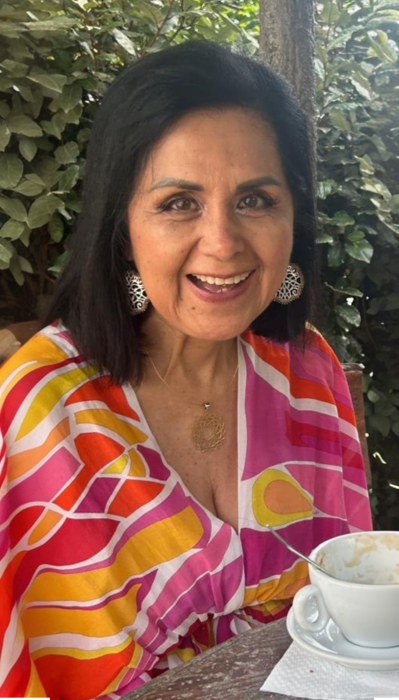
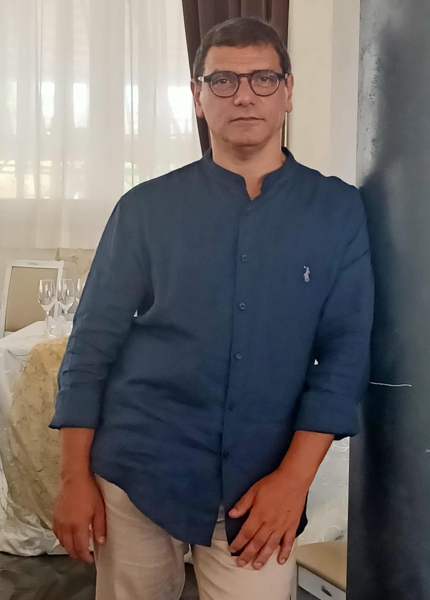
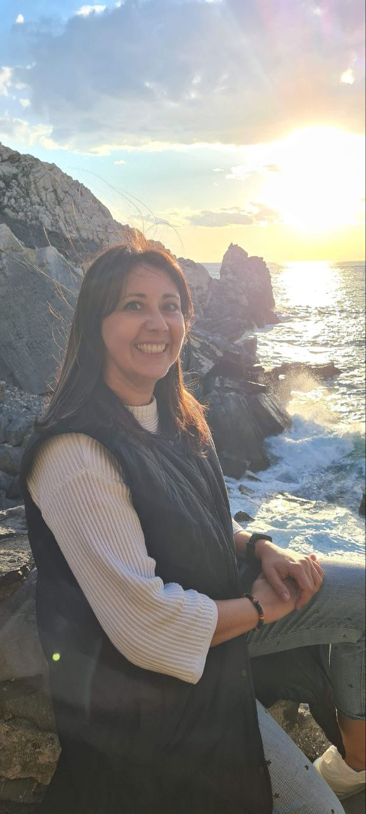
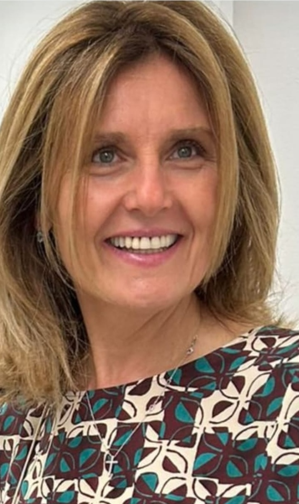
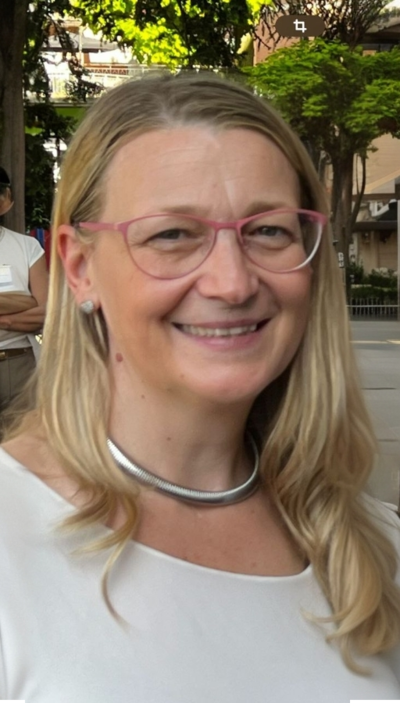
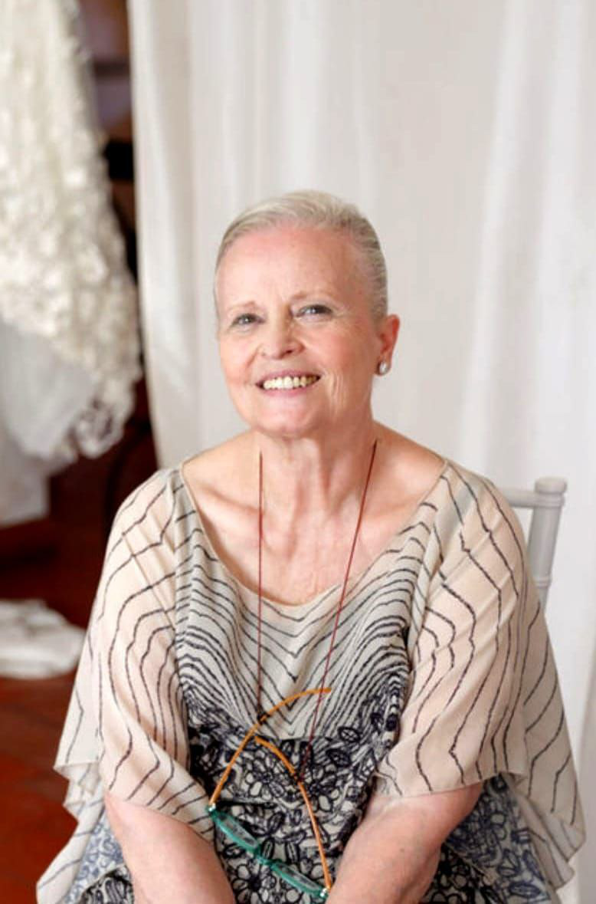

I nostri volontari
Nulla di ciò che facciamo sarebbe possibile senza il lavoro e la dedizione dei nostri volontari. Grazie al loro impegno e alle loro competenze possiamo portare avanti la missione di Curacari.
Cura Solidale
Promuoviamo una cura basata su ascolto, accoglienza, empatia, formazione e inclusione. Vogliamo contribuire all'umanizzazione delle cure, mettendo al centro il supporto reciproco e la solidarietà tra i caregiver.
Ci rivolgiamo a familiari, persone in età lavorativa e studenti, con un approccio culturalmente sensibile e rispettoso delle diverse ideologie, usi e costumi.


Il team

Elizabeth Cueva Perez
Presidente di Curacari

Mario Ponziano
Medico volontario

Maria Assunta Ioele
Avvocatessa volontaria

Elisabetta Adani
Volontaria infermiera
Riccardo Ferrari
Incaricato alla crescita

Laura Amaritei
Facilitatrice volontaria

Angela Azzaro
Mediatrice familiare volontaria
I nostri obiettivi formativi
Empowerment
Formazione di volontari, caregiver e assistenti per promuovere l'autonomia tramite l'educazione socio-sanitaria.
Capacità e Potenzialità
Aumentiamo le capacità dei caregiver per rispondere con più sicurezza alle sfide della non autosufficienza.
Competenze Pratiche
Conoscenze pratiche per organizzare e svolgere attività di cura in modo efficace e sicuro.
Conoscenze Specifiche
Informazioni sulle problematiche fisiche, emotive e curative di persone anziane o non autosufficienti.